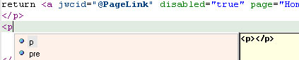
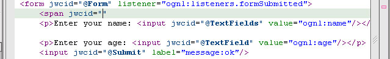
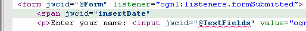
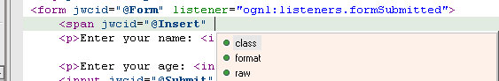
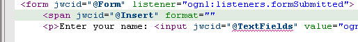

For common Spindle editor features see Spindle Editors
The template editor is not a truely a genric XML/HTML editor, but rather a text editor that is tailored to working with Tapestry template files.
As such the generic DTD based syntax completion available in the Specification XML Editor is not found in this editor.
That said, there are some neat features to this editor.
An optional feature (see the Spindle "Editors" preference page to turn it on) now to offer attribute and tag completions from the XHTML 1.0 DTDs in files with the .html extension.
Note: that the rules for inserting new html tags are loose. Unlike the Specification Editor, the Template Editor only examines the previous open tag for suggestions. Also, new tags are only suggested after an open bracket '<' and not anywhere like the Specification Editor. But, hitting Ctrl+Space in a region of whitespace will suggest the next logical close tag (if its legal in the location).
Attribute completion is arranged so that XHTML attribute suggestions are always ordered after Tapestry parameter suggestions.
Suggesting a tag starting with 'p'

Suggesting the next logical closing tag.
HTML attributes

Whenever you type and then pause for a short period, the Tapestry template parser runs an attempts to reconcile all of the Tapestry like stuff in the file. So, if you introduce an error it will appear as annotation and when you fix a problem the annotation will disappear.

TIP - Parsing templates depends on the templates specification having been successfully built by the Spindle builder. If the .jwc or .page file associated with this template had XML parse errors (or the builder did not pick up the spec at all), the template parser will not run and no annotations will appear. When you fix the problem with the build, the parser will start working automatically.
TIP - he parser used is the one Tapestry uses at runtime. This parser stops at the first error it finds. So it will be the case that the template editor will show only one error even if there are multiple errors in the file. Fixing an error will trigger a parse and the next error in the file will be annotated.
Tapestry templates need not be HTML at all. The only requirement is that they are tag based and that tags with 'jwcid' attributes are properly nested (well formed). The Tapestry parser ignores (for syntax checking purposes) any content in the file that is not a tag containing the 'jwcid' attribute. Hence the syntax completion works only in tags containing the 'jwcid' attribute.
There is one exception show below:
start a tag and hit Ctrl+Space to invoke syntax completion

You get the option to make this tag a Tapestry one. Here we chose 'jwcid'

'jwcid' attribute may take two forms. First a simple Id string that referes to a <component> declaration in this template's spec. Spindle syntax completion can handle looking up these ids.
Here a component with id 'insertDate' of type 'Insert' is declared in the spec:


The second form is that of an implicit component declaration. It takes the form of a simple Id (this is optional), the '@' character followed by a valid component name. Spindle syntax completion can help lookup component names:

Note that moving up and down in the list of options will display a summary of the currently selected component.
There are some syntax completion features that make it easier to bind values to the parameters of components in your templates. These depend on the template's specification having been picked up and successfully parsed by the builder.

You can also change the name of a parameter attribute by invoking syntax completion within its name (here the text cursor was inside the word 'class':

we chose to change 'class' into 'format'

When you hover over things like component names or attributes that are component parameters, an infomation window will pop up giving some info about that item. (This also depends on the template's spec being picked up successfuly by the builder).

| Keybinding | Description | Notes |
| F3 | Open Declaration | Open an editor on the element the cursor is on. Includes class names, components and component parameters. |
| Alt+F7 | Jump to spec | Important notes about jumping in general** |
| Alt+F8 | Jump to Java class | |
| Ctrl+Alt+Arrow Keys | Navigate between XML attributes |
** Jumping (Alt+F6 and Alt+F7) are also available in the Java Editor. Note that jumping from a binary file or binary class to another binary file (binary means located in a jar file) is not possible. This is not a limitation of Spindle. Rather it is a limitation of Eclipse. Lastly, jumping depends on the project having been built without fatal errors and the current file being edited has been seen by the Spindle project builder.